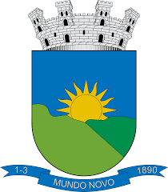

BAIXA GRANDE × ITABERABA
0 × 3
Copa 2 de Julho • Sub-15

Futebol de base, formação e identidade. Acompanhe a Seleção dentro e fora de campo.
COPA REGIONAL FEMININA 2026
BAIXA GRANDE
MUNDO NOVOPartidas oficialmente registradas em 2026.
Copa 2 de Julho • Sub-15
Copa 2 de Julho • Sub-15
Copa 2 de Julho • Sub-15
Copa Jacuípe • Sub-15
Copa Regional Feminina 2026
As principais novidades da Seleção em um só lugar.
Um resumo rápido da temporada.
Atletas cadastrados e organizados por categoria.
Registros dos atletas, treinos, jogos e momentos da nossa Seleção.
Confira imagens e momentos da Seleção de Baixa Grande.
ABRIR GALERIA →